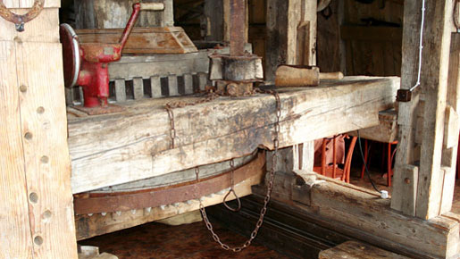

Veski Kõrts on lugu sellest, kuidas vana mahajäetud veski endale uue hingamise sai.
Praegu püüab meie veski tuuli Mustamäel, Laki uulitsal pakkudes Veskimehe koduköögis mooritud hõrgutisi ja võlujooke üle laia ilma.
Astuge sisse Veskimehe kodu uksest!
Võtame Teid rõõmuga vastu!
- 


Pühapäeviti algusega kl 12 on kõik lapsed ja täiskasvanud kutsutud osalema üritusel Pipi-Lota Pannkoogivanker, kus lastega tegeleb Pipi. Pakume erinevate täidistega pannkooke ja Pipi õpetab lastele toidutegemiskunsti.
Veski Kõrts on
Drifters MC kodukõrts. Erinevaid üritusi vaata siit!
Meie päev algab 7.30-st, kui meie pagarid on letile toonud otse ahjust tulnud saiad ja pirukad. Värsked koogid, küpsised ja muud maiused. Lisaks pakume hommikuti ka putru ja sooje võileibu ja muna peekoniga ja muidugi ei puudu ka värske oakohv!
12.00 – 16.00 pakume lõunat, mis vaieldamatult linna parim! Supid ja praed ja salativanker – igal äripäeval uued valiku.
Peale lõunat kuni sulgemiseni pakume peenemaid roogasid ja parima hinnaga õlut linnas!